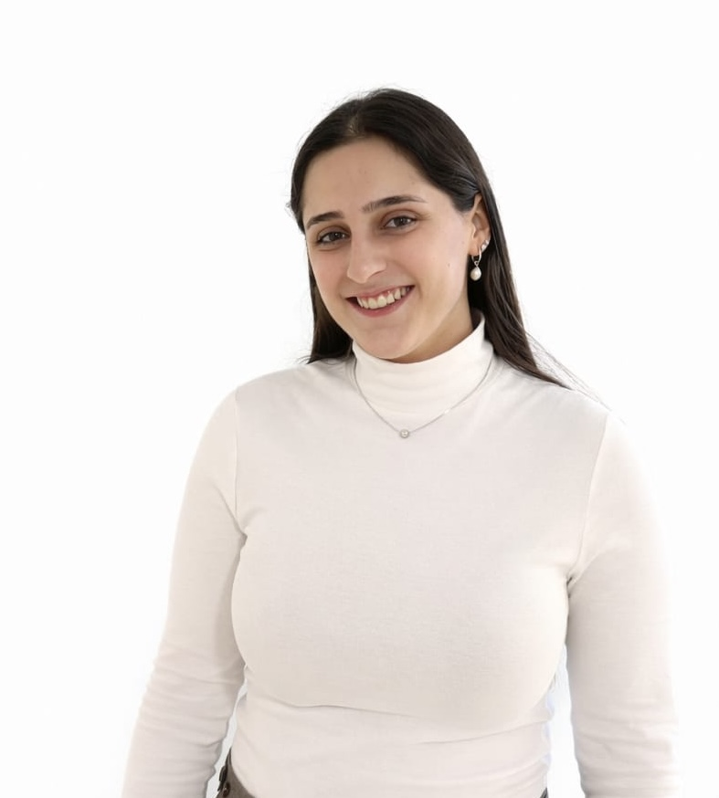

DRIVE Lab · Ben-Gurion University of the Negev
People
Meet the researchers and students of DRIVE Lab, working on decision-making, robotics, and intelligent vehicles.
Lab Director
Postdoctoral Researchers
SK
Dr. Santosh Kumar
Postdoctoral Researcher
MSc Students
YA
Yuval Aroosh
MSc Student
SM
Shachar Miller
MSc Student
Co-supervised with Avinoam Borowsky
RH
Ram Hirsch
MSc Student
ZM
Ziv Maimon
MSc Student
NR
Nir Rahav
MSc Student
ES
Elad Shneor
MSc Student
Undergraduate Researchers

Or Akeriv
Undergraduate Research Assistant
Alumni
Lidor Erez
MSc alumnus · Co-supervised with Shahaf Shperberg
Thesis: Dynamics-Aware Refinement of Hybrid Plans for Robotic Motion
Gal Ram
MSc alumnus · Co-supervised with Moran Koren
Thesis: Reinforcement Learning for Perimeter Control under Heterogeneous Traffic Demand
Harel Gil
MSc alumnus
Thesis: Topology-Aware Perimeter Identification for Urban Traffic Control Using Reinforcement Learning
Amit Gedj
MSc alumnus · Co-supervised with Shai Arogeti
Thesis: Disturbance-Aware Data-Driven Optimal Control
Eden Hindi
MSc alumnus · Co-supervised with Erez Karpas
Thesis: Denoised World Models for Generalization across Contexts in Reinforcement Learning